V5 → V6
[자문] 26.11.06
v5(10.30)와 11.06 기준 v6를 나란히 비교함. 크게 달라진 다섯 가지를 장마다 하나씩 담음.
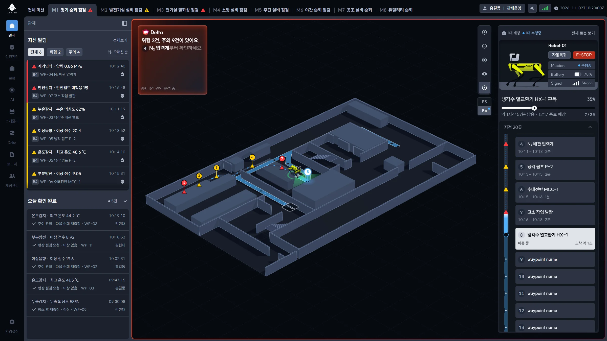
01
로봇 3D 구현
v5
지도에 실물 비율 3D 로봇(SPOT · 휠 로봇 모베드)이 걷고 앉음. 둘레 바닥 표식(빗금 원판 · 겹친 원 · 초록 호)은 상태와 상관없이 같은 모양이라, 상태는 오른쪽 패널 글자를 읽어야 앎.
v6
로봇 둘레 호 · 시야 빔의 색과 모양이 상태를 말함. 이동 중 초록 두 줄 · 측정 중 앞 호가 돎 · 위험 감지와 긴급정지 빨강 · 일시정지 노랑 끊긴 줄 + 머리 위 배지 · 자동복귀 회색 + 돌아가는 점선 · 통신 끊김은 직전 자세로 멈춰 옅게. 충전 자리는 바닥의 DOCK 판. 오른쪽 패널도 같은 상태를 제목 자리에 아이콘 + 굵은 이름으로 보여 줌(한 규칙).
관제자의 눈은 지도에 있음. 로봇만 보고 "지금 무슨 상태인지" 알아야 패널 글자를 찾으러 눈을 옮기지 않음.
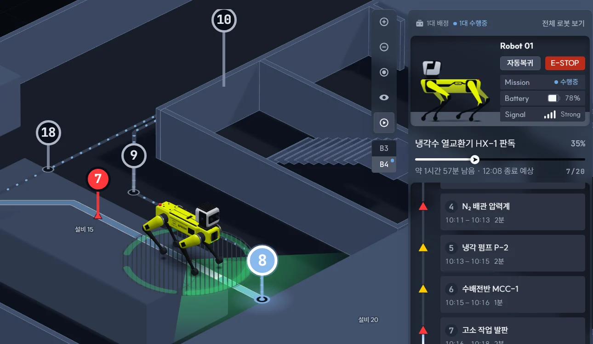
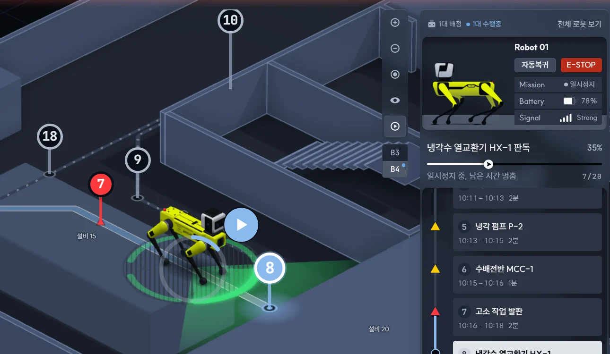
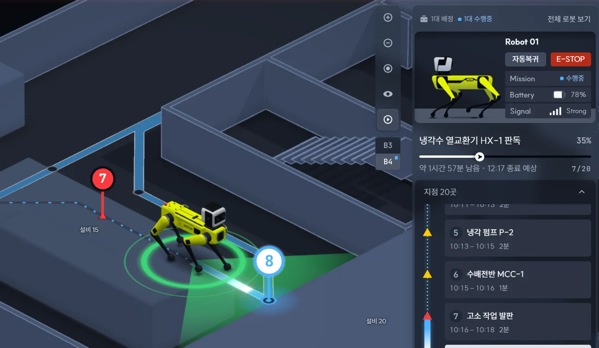
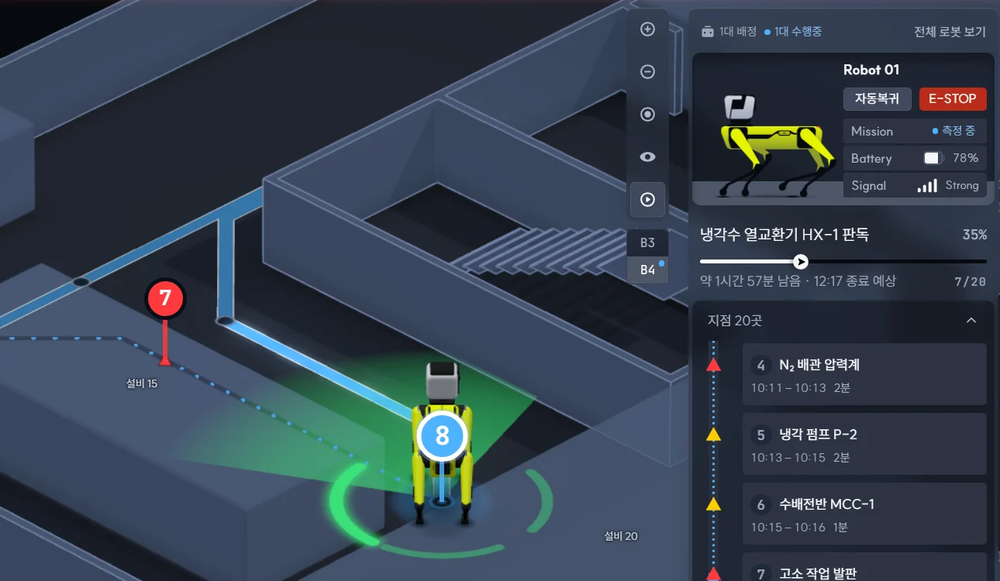
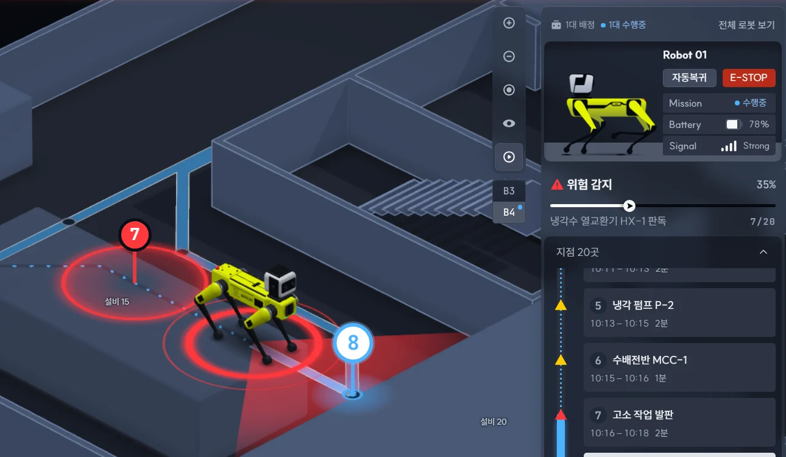
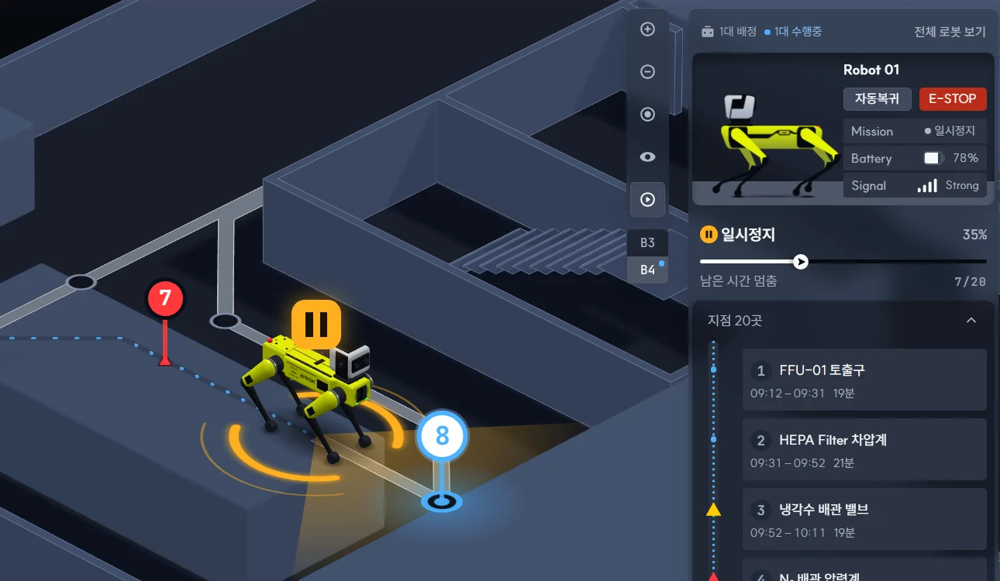
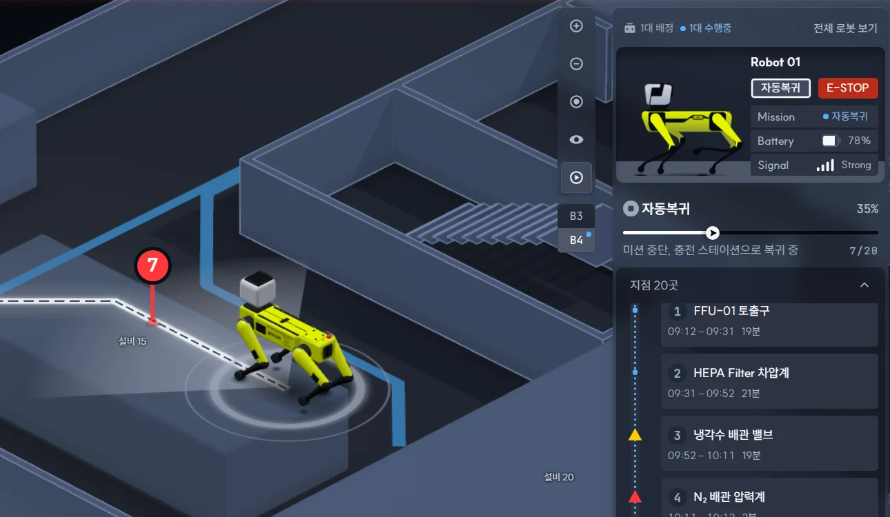
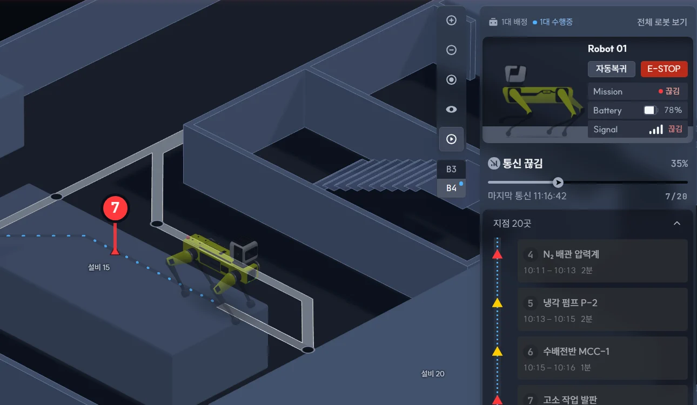
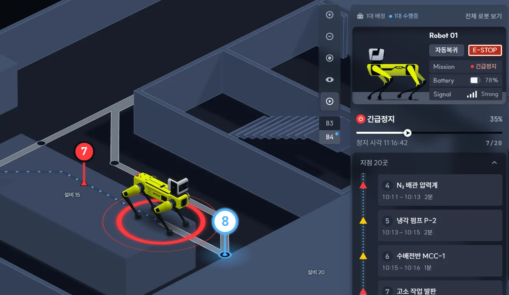
02
상단 미션 탭
v5
상단 바 [통합 순회 현황] › [미션 ▾] 두 칸. 다른 미션은 드롭다운 표를 열어야 보이고, 다른 미션에 무슨 일이 났는지도 메뉴 안 기호로만 앎.
v6
브라우저 탭처럼 [전체 미션] [M1] … [M8]을 늘어놓음. 탭 이름 뒤 위험 · 주의 기호로 다른 미션의 이상이 늘 보임. 탭은 미션의 창 — 누르면 그 미션의 지금 상태로 감(수행중 → 관제 · 대기 → 실행 전 미션 설정 · 완료 → 미션 완료 + 보고서). M 번호는 미션을 따라 고정되고, 끌어서 순서를 바꾸면 모든 화면의 탭 줄이 같이 바뀜. 전체 미션의 알림을 누르면 그 미션 탭 + 조치 팝오버까지 바로 열림.
여러 미션이 동시에 돌 때, 메뉴를 열지 않아도 어디에 문제가 있는지 보이고 한 번에 옮겨 가야 함.
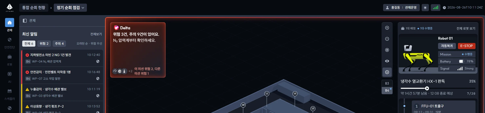
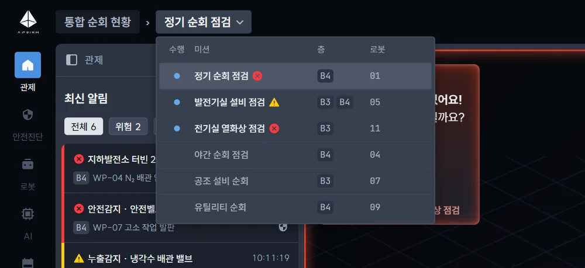
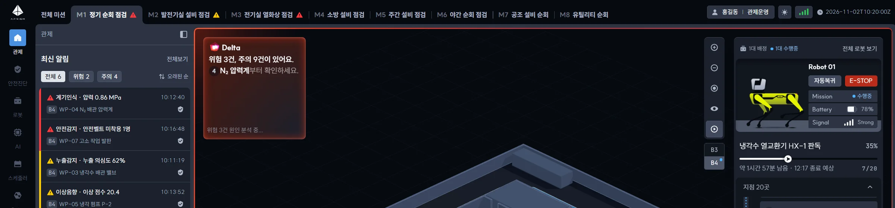
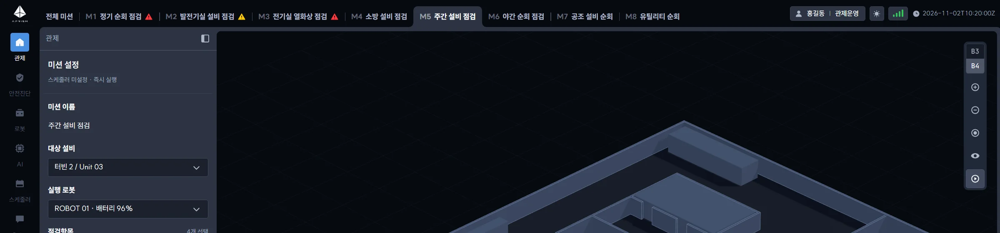
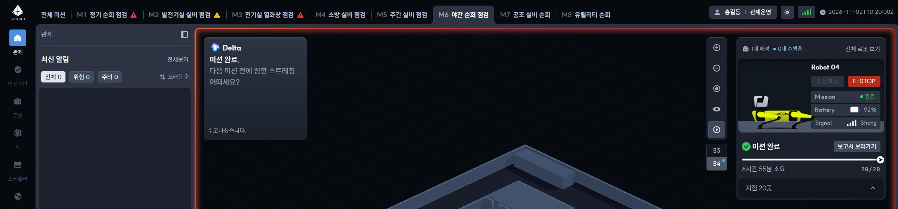
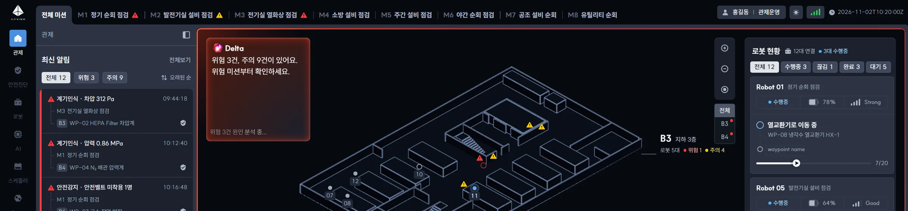
03
지도 번호
v5
지나온 지점 · 앞으로 갈 지점까지 번호 핀을 모두 세움. 겹치면 솎아 내서 3D · 탑뷰 · 확대마다 보이는 번호가 달라짐.
v6
기본은 문제 지점(위험 · 주의 · 건너뜀) + 지금 지점만. 문제없이 지나온 지점은 바닥 점만 남고, 다른 번호는 오른쪽 지점 목록에 손을 올릴 때 그 번호만 뜸. 위험 · 주의는 축소해도 남음. 측정을 마친 정상 지점은 초록으로 잠깐 떴다 사라지고, 처리한 위험 · 주의는 회색으로 남음. (미션 설정 · 사전 점검은 점검 순서라 번호를 모두 보여 줌)
번호가 많으면 정작 봐야 할 지점이 묻힘. 지도는 "어디가 문제고 로봇이 지금 어디 있나"만 말하면 됨.
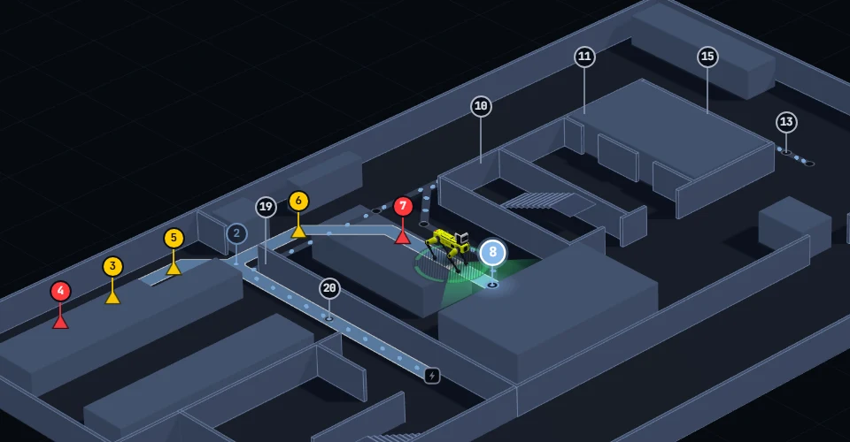
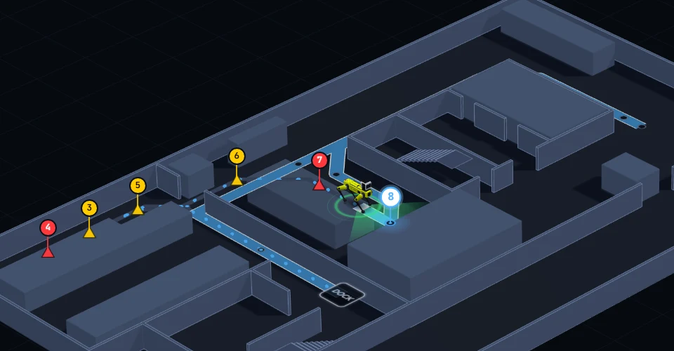
04
Delta 펼침
v5
펼치면 대화. 굵은 첫 줄과 물음 한 줄, 물어보면 문장으로 답하고 알림 줄 · 단추가 붙음.
v6
펼치면 묻지 않아도 정해진 꼴의 답이 바로 보임. 현재 관제 요약 → 가장 급한 1건(판정 · 값과 기준 · 재발, 먼저 보는 이유, [위험 상세 확인] [위치 보기]) → 다음 확인 항목(미션은 [M번호 이름]) → 주의 n건(접힘) → 물어볼 말. 접힌 위젯에도 지점 번호 표식.
관제자에게 필요한 건 대화보다 "무엇부터, 왜". 늘 같은 꼴이라 한눈에 읽히고, 미션 번호가 상단 탭과 같아 바로 찾아감.
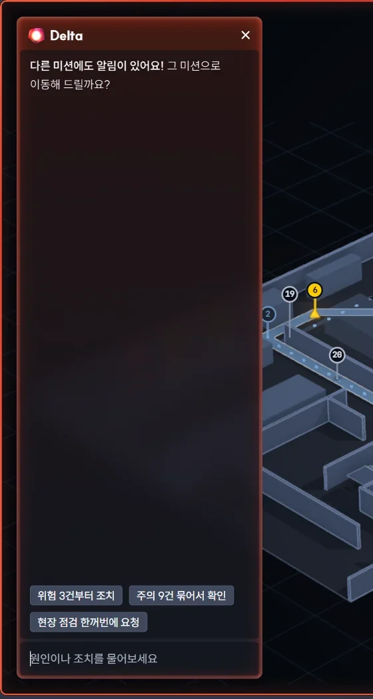
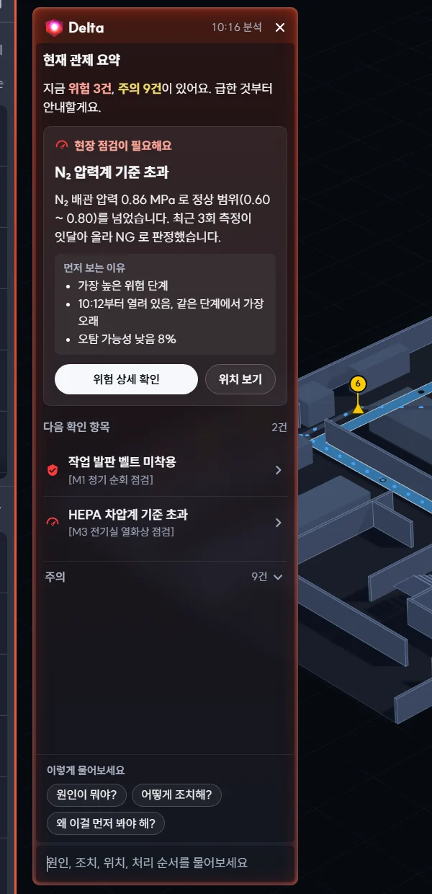
05
안전진단
v5
왼쪽에 미션 전체 목록과 미션별 작은 지도를 쌓음. 판정은 관제와 따로 계산해 관제 알림과 어긋날 수 있었음.
v6
관제와 같은 상단 미션 탭(첫 탭 전체 미션). 왼쪽은 고른 미션 하나의 미니맵 — 관제 지도의 실제 경로를 그대로 뽑아 그리고, 로봇은 3D 로봇을 위에서 본 그림. 판정은 모든 미션이 관제 알림 기준이라 관제에서 본 알림과 카드가 같음. 완료 미션도 들어와 지난 순회와 견줌.
관제에서 본 위험이 안전진단에서 다르게 보이면 근거를 믿을 수 없음. 같은 탭 · 같은 길 · 같은 판정이어야 화면을 옮겨도 이어짐.
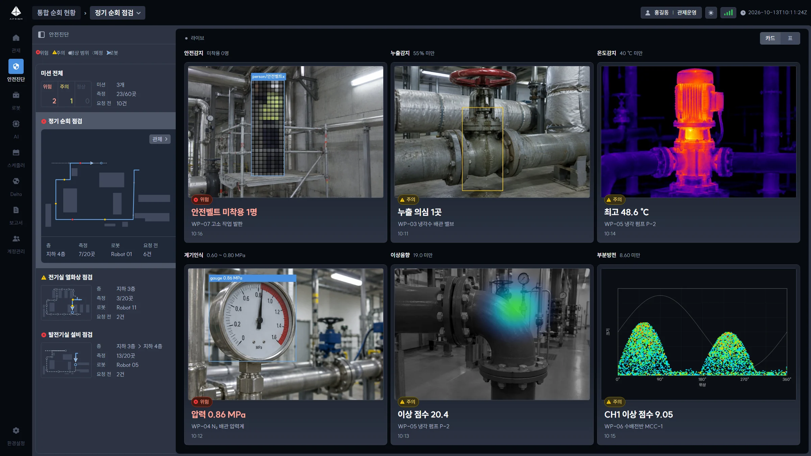
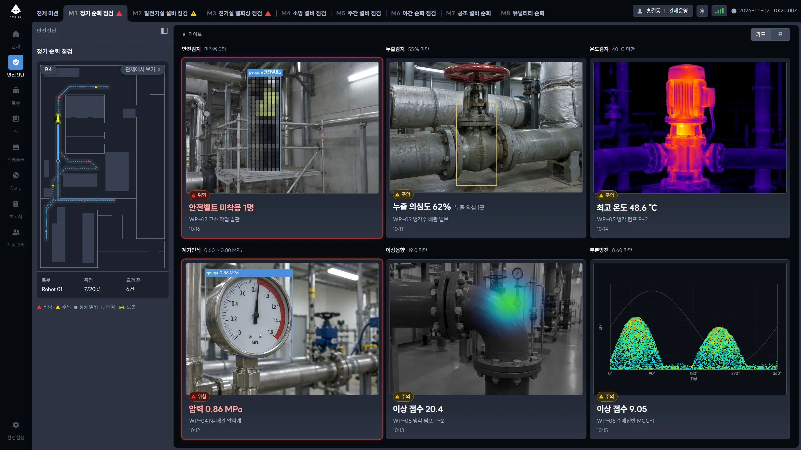